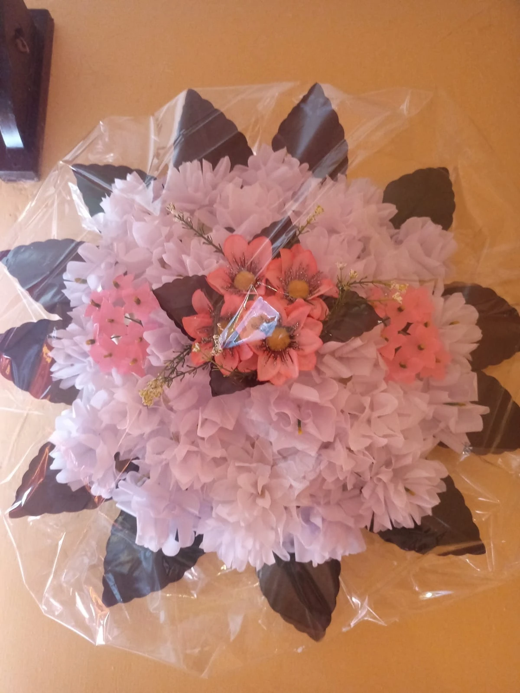

El trabajo de unas manos.El cariño de toda una vida.
NUESTRA TRADICIÓN, NUESTRAS MANOS
Recordar también
es cuidar.
Llevar flores al panteón es una forma de acompañar, agradecer y mantener cerca a quienes queremos. En Veracruz, las coronas forman parte de esa tradición de memoria y encuentro familiar.
En Actopan, el oficio de hacer coronas con materiales como papel y foami está documentado entre sus artesanías. Chalía comparte esa dedicación: crea cada corona de flores artificiales a mano, una por una.
01Manos artesanas
Cada pieza lleva tiempo y atención.
02Flores que permanecen
Un homenaje que acompaña el recuerdo.
03Un toque personal
Colores elegidos con intención.
Conoce las fuentes de esta tradición
Universidad Veracruzana · Día de Muertos
Ayuntamiento de Actopan · Directorio de artesanos
Meganoticias Veracruz · Tradición de las coronas